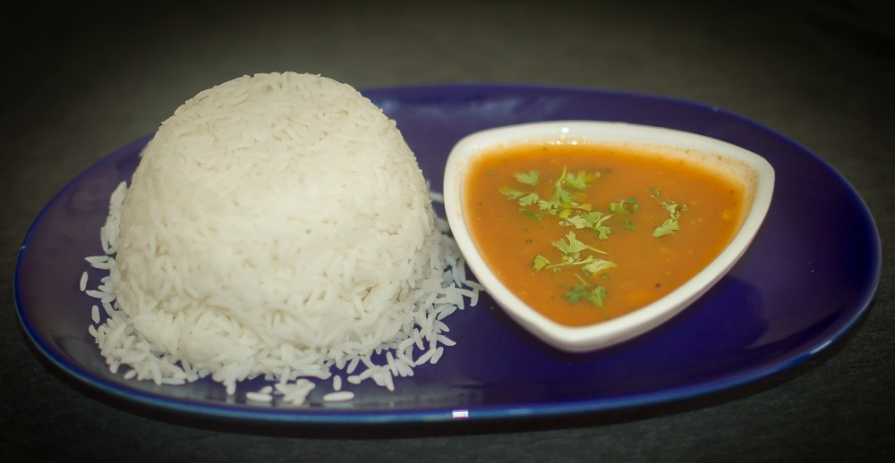
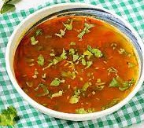

RASAM 
INGREDENTS
RASAM POWDER:
- 1 tsp black pepper
- 1 tsp cumin seeds
- 1 tsp coriander seeds
- 2 dried red chilies
BASE INGREDENTS
- 1 medium-sized tomato (chopped or mashed)
- 1 tbsp tamarind paste (or small lemon-sized tamarind soaked in water)
- ½ cup toor dal (pigeon peas) (cooked & mashed) (Optional)
- 3 cups water
- 2 cloves garlic (crushed, optional)
- ½ tsp turmeric powder
- 1 tsp rasam powder (homemade or store-bought)
- 1 tsp black pepper powder (adjust to taste)
- 1 tsp cumin powder
- Salt to taste.
- 1 tbsp chopped coriander leaves
TADKA
- 1 tsp mustard seeds
- 1 tsp cumin seeds
- 2 dried red chilies
- A pinch of asafoetida (hing)
- 1 sprig curry leaves
- 1 tbsp ghee or oil
INSTRUCTIONS
- Step 1: Prepare Rasam Powder (Skip if using store-bought)
- Dry roast black pepper, cumin, coriander seeds, and red chilies in a pan for 2 minutes.
- Grind them into a fine powder. Your homemade rasam powder is ready!
- Step 2: Cook Dal (Skip if not using dal)
- Cook ½ cup toor dal in a pressure cooker with 1.5 cups of water until soft.
- Mash the dal and set it aside.
- Step 3: Prepare the Rasam Base
- In a pot, add chopped tomato, tamarind extract, turmeric, salt, and 2 cups of water.
- Let it simmer for 5–7 minutes until tomatoes turn soft.
- Add rasam powder, cumin powder, black pepper powder, and garlic (if using).
- Add the mashed dal (if using) and let it cook for 2 more minutes.
- Add 1 more cup of water and bring it to a light boil. Do not overboil—just let it froth up.
- Step 4: Tempering (Tadka)
- Heat ghee/oil in a small pan.
- Add mustard seeds, let them splutter.
- Add cumin seeds, dried red chilies, asafoetida, and curry leaves.
- Pour this hot tadka over the rasam and mix well.
- Step 5: Serve!
- Garnish with fresh coriander leaves.
- Serve hot with steamed rice, or drink it as a warm, comforting soup.